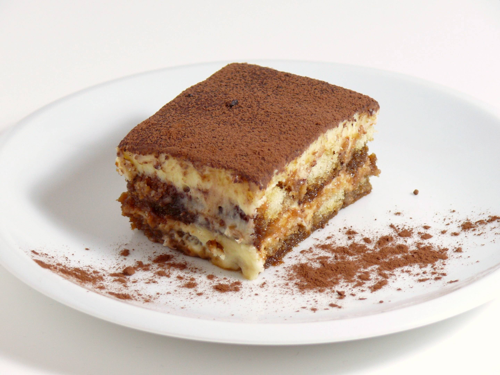

Tiramisu

Description
A classic Italian dessert featuring layers of coffee-soaked ladyfingers and creamy mascarpone, topped with a light dusting of cocoa powder. Rich, smooth, and perfect for any occasion.
Ingredients
- Egg Yolks
- Sugar
- Milk
- Cream
- Vanilla
- Mascarpone
- Coffee
- Rum
- Ladyfingers
- Cocoa Powder
Steps
-
Make the Filling: Cook the egg yolks, sugar, and milk until slightly thickened. Let cool slightly, then chill in the fridge for about an hour. When the filling has fully chilled, mix in mascarpone cheese.
- the Whipped Cream: Beat heavy cream with vanilla extract until stiff peaks form.
-
Soak the Ladyfingers: Combine coffee and rum in a small bowl. Pour mixture over ladyfingers that have been split in half lengthwise.
-
Assemble the Tiramisu: Line the bottom of a baking dish with soaked ladyfingers. Spread half of the mascarpone mixture over the ladyfingers, then half of the whipped cream over that. Repeat in the same order. Dust with cocoa powder.
Home